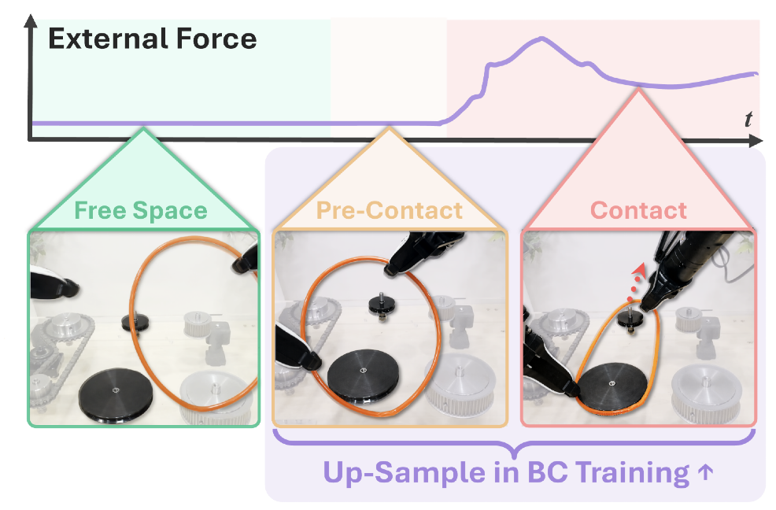

FACTR 2: Learning External Force Sensing for Commodity Robot Arms Improves Policy Learning
Abstract
Contact-rich manipulation requires force sensitivity, but many robot arms lack dedicated force sensors due to their high cost. We present Neural External Torque Estimation (NEXT), a data-driven method that estimates external joint torques without needing any dedicated force sensors. NEXT trains in 1 minute from only 10 minutes of free-motion data, yet achieves estimates comparable to dedicated joint-torque sensors. NEXT enables force-feedback teleoperation on low-cost arms and improves policy learning through Force-Informed Re-Sampling Training (FIRST), which re-samples the training batch distribution to emphasize critical task phases during behavior cloning. Across five long-horizon tasks, FIRST outperforms prior force-aware policies by over 17% in task progress. Together, NEXT and FIRST bring force-aware teleoperation and policy learning to off-the-shelf robots without additional sensing hardware.
Result Highlight
NEXT: Neural External Torque
Estimates external joint torque without dedicated force sensors.
FIRST: Force-Informed Re-Sampling Training
Re-samples the training batch to prioritize critical task phases.
NEXT: Neural External Torque Estimation
Data-driven external joint torque estimation without dedicated force-torque sensors for any arm.
FIRST: Force-Informed Re-Sampling Training
Use estimated external torque to up-sample pre-contact and contact data during behavior cloning.
Contact Phase Labeling
External Torque signal from NEXT is used to segment demonstrations into free-space, pre-contact, and contact phases.
Segment using external torque produced by NEXT
Up-Sample Contact-Relevant Data

Label free-space, pre-contact, and contact phases.
Up-sample pre-contact and contact data.
Autonomous Policy Rollout (1x Speed)
Task 01
NIST Belt Assembly
Task 02
Cap Screwing
Task 03
NIST Insertion
Task 04
Tool Clean Up
Task 05
LEGO Assembly
Task 06
Box Folding
Task 07
Ethernet Insertion
Long-Horizon NIST Board Task (Insertion + Belt Assembly)
Robustness
Re-sampling pre-contact and contact data during training improves robustness to task perturbations.
NIST Belt Assembly
Tool Insertion
Pill Pick Up
Recovery Behavior
Re-sampling pre-contact and contact data during training encourages more recovery behavior than the baseline.
Belt Alignment Recovery
Belt Fitting Recovery
Misaligned Cap Recovery
Belt Fitting Recovery
Belt Fitting Recovery
Misaligned Cap Recovery
Vision + Torque Policy without FIRST
Without FIRST, the baseline fails more often in critical pre-contact or contact phases of the task.
NIST Insertion + Belt
Fails to align the belt with the pulley.
Cap Screwing
Over-rotates after the cap is tightened.
Tool Clean Up
Fails to align and insert the tool.
Acknowledgements
We thank Andrew Wang, Yulong Li, Koki Yamane, Yangcen Liu, Yongliang Wang, Ritvik Singh, Zheyuan Hu, Adam Kan, and Arthur Allshire for valuable discussions and feedback on the paper. We also thank Zheyuan Hu and members of the AIRe Lab for generously providing access to their YAM arms for this project. This work was supported in part by AFOSR FA9550-23-1-0747, ONR MURI N00014-22-1-2773 and ONR MURI N00014-24-1-2748.
BibTeX
@article{oh2026factr2,
title = {FACTR 2: Learning Force Sensing and Force-Aware Policies for Any Robot Arm},
author = {Oh, Steven and Liu, Jason Jingzhou and Tao, Tony and Han, Philip and Shaw, Kenneth and Funabashi, Satoshi and Salakhutdinov, Ruslan and Pathak, Deepak},
year = {2026}
}